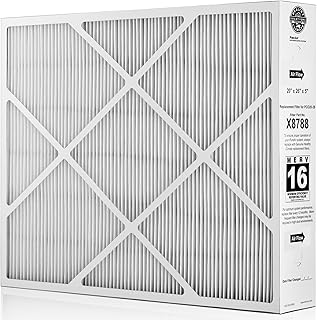
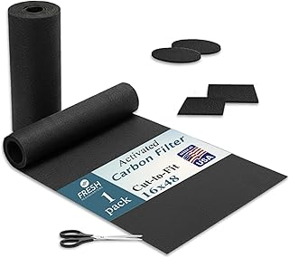
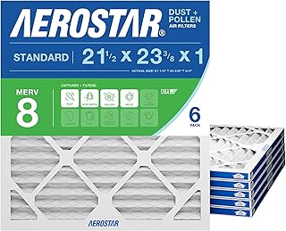

← furnaceprefilter.com
Furnaceprefilter: What 2026 Buyers Need to Know
May 2026
Buying furnaceprefilter online can feel risky. Mixed reviews, confusing specs, and every brand claiming to be "the best." Here's what actually matters.




Editor's Picks
⭐ 4.6 · $63.50
⭐ 4.7 · $27.96
⭐ 4.5 · $16.24
⭐ 4.8 · $165.99
Key Features Worth Paying For
- Availability — In-stock with fast shipping beats a "better" product backordered for weeks.
- Return policy — Easy returns mean lower risk. Even well-reviewed furnaceprefilter might not suit your situation.
- Compatibility — Always double-check that furnaceprefilter fits your specific setup before ordering.
- Dimensions matter — Read the actual measurements. "Large" means different things to different furnaceprefilter manufacturers.
- Verified reviews — Focus on 4+ star products with 50+ verified reviews. Ignore anything with only a handful of ratings.
Insider Advice
- Check "Frequently Bought Together" — it shows what extras you might need for your furnaceprefilter.
- Set a firm budget before browsing. It's easy to creep up $50-100 comparing furnaceprefilter features.
Last Word
Our comparison tables on furnaceprefilter.com break down options by price, features, and ratings. Start there.
Affiliate Disclosure: As an Amazon Associate, we earn from qualifying purchases. This doesn't affect our recommendations.